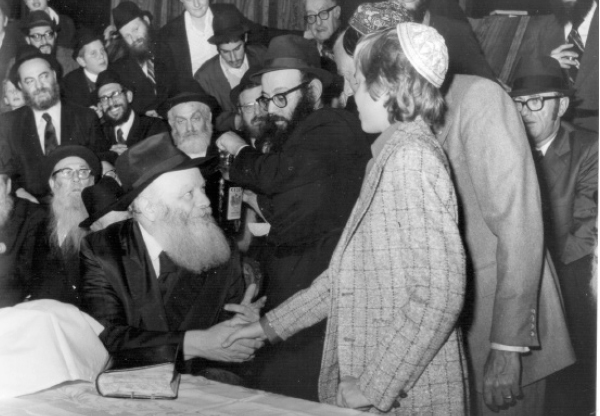

The Rebbe’s Miracle Child
I decided to tell her about the terrible experience I went through last year and my overall difficulty in having more children. “I want to have at least one more child,” I cried to her, “but I’m emotionally broken. I’ve lost all hope.” It was specifically my conversation with this Chabad woman, of all people, who herself was suffering from a terminal illness, that finally helped me to lift this heavy burden off my chest. She listened attentively and with great understanding, and then she said, “Have you written yet to the Lubavitcher Rebbe?”
Translated by Michoel Leib Dobry

Each year, the students of the Chabad vocational school in Kiryat Malachi gather for a Chassidic farbrengen, during which the counselors and special guests speak with the students about the Rebbe, Melech HaMoshiach, and the great revolution taking place in the world.
Most of the students come from non-Torah observant homes, and they have heard about these subjects at school on numerous occasions. However, there’s nothing like a warm and friendly Chassidic gathering to give such concepts a new dimension that will accompany them all their lives.
The school’s mashpia, Rabbi Avraham Tzadok, makes certain to invite a special guest each year to tell a stirring miracle story or to speak about a personal moment he experienced with the Rebbe. This time, the students were in for a big surprise. As they anxiously waited for the guest to enter, they saw to their amazement none other than their fellow student, Yaniv Yisroel Sukner, going up to the speaker’s rostrum. “I am a child of the Lubavitcher Rebbe,” he said at the opening of his remarks, as his friends sat speechless.
Last week, we heard the whole story from his mother, Mrs. Yoela Sukner, who lives today in Ashdod. “His birth was an absolute miracle, against all the laws of medicine,” she said at the start of the interview, as she revealed to us her fascinating and moving story.”
TO BE A PARENT
“I was born in Paris, the City of Lights, just a couple of years prior to the Six Day War. My parents’ home had no connection to Torah and mitzvos. Apart from the fact that I realized that I was different from my friends because I was Jewish, I knew and understood absolutely nothing about what being Jewish really meant. On the contrary, we tried to hide our origin and kept our distance from the Jewish community.
“The only thing Jewish in our home upon which my parents placed a strong emphasis was the connection to Eretz Yisroel and the Zionist movement. My father never stopped talking about the need to help the Jewish homeland and his admiration for the pioneer spirit of its people. Therefore, it came as no wonder that when I reached the age of sixteen, I left my parents’ home and the warm supportive environment of Paris, parted from my friends, and emigrated to Eretz Yisroel. Since I was raised in a very open home, the Youth Aliya organization sent me to a dormitory in Kibbutz HaZore’a.
“During my stay in the dormitory, I met my husband, a new immigrant from the Soviet Union. In 5742, when I was only seventeen years old, we got married and established our place of residence in the city of Yavne.
“From a very early age, I already knew that bearing children would not come easily for me. I realized that I had certain medical restrictions that would cause me considerable distress on the way to fulfilling my dream of parenthood. However, I was determined to go through the entire lengthy process and I had my husband’s full support and consent.
“Immediately after our wedding, we visited prominent doctors in virtually every hospital in Eretz Yisroel. Some expressed optimism, while others were very pessimistic. However, I remained firm and steadfast. Regrettably, as the years passed, my hope and confidence started to waver. As the saying goes, ‘the greater the expectations, the greater the disappointment.’ There were times when the doctors told me that I would soon have a child, but the pregnancy was never completed to term.
“I felt as if I was on an emotional roller-coaster. One minute I was happy, filled with confidence and determination, and the next minute, I was sad and downtrodden. Today, as I look back, I don’t know what gave me the strength to confront this situation. Finally, after four years of continual treatments and examinations, I was sent to a specialist at a hospital in Yerushalayim. By Divine Providence, the first treatment was successful, and we were overjoyed to welcome our first son into the world.”
MY PERSONAL TRAGEDY
“A year earlier, my parents had also emigrated to Eretz Yisroel. I was very happy to be reunited with them, but regrettably, it didn’t last long. Their integration into Israeli society didn’t go smoothly. As a result, they decided to go back to France.
“I soon began to miss my parents and the familiar environment where I grew up. The sense of longing grew so intense that I felt that I had to join my parents back in France. My husband had already completed his military service, and he gladly agreed to make the move. Thus, we packed up our belongings, bundled up our infant son, and left Eretz Yisroel.
“We returned to Paris without a cent in our pocket, and my father immediately put me to work at his clothing store. Two years later, when my husband received French citizenship, he too found a regular job. When our son reached school age, I left my father’s store and took a position working at the reception desk of a prestigious Parisian hotel, a profession I had learned in my youth. As a result, our financial situation was relatively comfortable.
“At a certain point, we decided that we wanted more children. We again began the process, which demanded a considerable amount of patience. This meant more visits to see doctors, more treatments and examinations, and lots and lots of paperwork. During this lengthy period, lasting several years, I was forced to leave my job and accept support from my parents. As my husband remained the sole income provider, our financial situation became somewhat difficult. Yet, our desire for another child was stronger than anything else.
“Only someone who has been through this process knows the heavy physical and emotional toll it takes. After several years filled with ups and downs, the good news came to us once again. When I heard that I was pregnant again, all the years of suffering and anguish disappeared in a moment. I walked around with a huge smile on my face, feeling as happy as anyone possibly could. During the months that followed, I was placed under the watchful eyes of a team of highly trained specialists in the field of gynecology. Every check-up brought continued encouragement that everything was fine and totally normal. At the end of nine months, the time came for us to go to the hospital.
“A few minutes after the birth, we were stunned when the head of the maternity ward came to us with some very unpleasant news. When the midwives realized that the child was in physical distress, they sent him for a battery of tests. The results gave a clear diagnosis: the child’s internal organs were not sufficiently developed and his life was in immediate danger. The doctor had difficulty explaining how the medical team hadn’t detected any problems during their routine examinations.
“The news hit me like a clap of thunder on a clear day. Just moments before, I had been in a state of euphoria. We were thinking about a name, and we had even bought clothes and toys. Now, the doctor was telling us that the baby had a slim chance of survival. I was crushed and emotionally broken. In an instant, I had turned into a shell of my former self. Two days later, I was released from the hospital while the baby remained under medical observation, undergoing further tests and treatments.
“In the beginning, I would visit him every day, until I realized that the situation was hopeless. Four months after his birth, the baby passed away, and I went into a state of intense depression and despair. I was angry at everyone. My friends and relatives were sincerely worried about my well-being, and I was eventually hospitalized in the mental health ward. I was inconsolable. Efforts by my husband and my parents to comfort and encourage me fell on deaf ears. The emotional pain and agony ran very deep, to the point that I stopped eating, drinking, and generally taking care of myself. We had taken a long and exhausting journey in the hope of having another child, and now all our dreams had been shattered.
“During those moments, thoughts of doom and gloom raced through my mind. Ever since I was a young girl, I had wanted a large family. I have only one brother, and I was always jealous of those who were raised in a house full of siblings. Suddenly, I felt that my whole world was crumbling. Who knew if we would ever have another child?”
A BROKEN HEART SPEAKING TO A HEART FILLED WITH FAITH
“A year had passed since that tragic event. I had begun to recuperate, and I wanted to set a new path for myself. I felt that I needed to feel the pain of others in order to regain my own emotional strength. Thus, I found myself working as a nursing attendant. My employer had sent me to care for a woman suffering r”l from a terminal illness that confined her to bed, and she needed help with her children and with every detail of her life.
“During the initial period, I worked for her on an employer-employee basis: she wrote down what I was supposed to do, and I carried out her instructions. However, as time passed, I developed a strong connection with this marvelous woman and her family. She was the first person to tell me about the Lubavitcher Rebbe and Chabad Chassidus. I learned from her about negel vasser in the morning, washing before eating, and the importance of davening.
“I was especially fascinated that despite the considerable pain and suffering she endured, her faith was unshakable. I learned more and more concepts of Judaism each day. She taught me simple things such as separating milk and meat, and keeping Shabbos and Yom tov. Every mitzvah was seasoned with pleasant explanations and interpretations.
“One day, when I felt sufficiently close to her, I decided to take the opportunity to draw from her tremendous well of faith. I decided to tell her about the terrible experience I went through the prior year and my overall difficulty in having more children. ‘I want to have at least one more child,’ I cried to her, ‘but I’m emotionally broken. I’ve already lost all hope that this can possibly happen.’
“It was specifically my conversation with this Chabad woman, of all people, who herself was suffering from a terminal illness, that finally helped me to lift this heavy burden off my chest. She listened attentively and with great understanding, and then she said, ‘Have you written yet to the Lubavitcher Rebbe?’
“While I had heard about the Rebbe (as there is no Jew in France who hasn’t), I was so far from the path of Torah that I considered this simply impossible. I had not been raised on emunas tzaddikim. I told her quite honestly that I no longer believed in anyone. Besides, how could the Rebbe, sitting and learning Torah in New York, possibly help me with something that is obviously medical in nature? I was very pessimistic, but my friend encouraged me. She told me numerous miracle stories that took place due to the Rebbe’s holy blessings, and I eventually agreed to let her write a letter on my behalf in request of a bracha.
“In the letter, she included my name and my parents’ names, detailing the painful experience I had recently endured, and asking that I should be blessed with at least one more child. She explained to me that even if I don’t receive a reply from the Rebbe, the very fact that I wrote and sent him the letter will produce the bracha.”
A MIRACULOUS SURPRISE
“One morning, just three months later, as I came to her house as usual, I saw her face shining with an expression of sheer joy.
“‘What happened?’ I asked excitedly. ‘Has there been an improvement in your condition?’ She told me to come in and said, ‘Yoela, go and wash your hands the way I taught you. You’ve just received a letter from the Rebbe.’
“I was thrilled. By this time, I already understood a little about the greatness of the Rebbe. As a result, I was somewhat moved by the fact that the Rebbe, the leader of the Jewish People, found the time to send me a reply. The Rebbe wrote that he had received my letter, and he would pray for me at the Tziyon of his father-in-law, the Rebbe Rayatz. He then added that, in his opinion, we should return to Eretz Yisroel, and we would find our future there in a manner of ‘change your place, change your fortune’ with a bracha in all matters of good.
“‘If I were in your place,’ my friend told me, ‘I’d get on a plane to Eretz Yisroel today.’ The reality of things was not as simple as that, and our eventual return took a little while longer. It was my husband who really surprised me. We were well organized financially, and I thought that he would reject the Rebbe’s proposal. In fact, he gave his wholehearted consent to the idea, and within just three months, we were on our way back to Eretz Yisroel. While we were leaving behind us a life of material plenty, I somehow felt that we had to do what the Rebbe had instructed, despite the fact that I was far from being one of his loyal disciples.
“Although I had faith in the Rebbe’s words, I constantly made certain to keep my expectations in check. Since I had suffered disappointment so many times in the past, I was determined not to let it happen again.
“Five months after our return to Eretz Yisroel, I began to feel strange sensations in my body. I went to the local health clinic for a check-up, and the doctor suggested that I do a blood test. I was quite certain that there was something seriously wrong with the state of my health. Imagine how shocked and overcome I was when the doctor came in with the test results: I was going to have a baby. According to all the rules of medicine, this would have been possible only after a long period of artificial fertility treatments. The whole thing seemed so incredible that I asked to have another test done.
“The doctors didn’t know how to explain this phenomenon, but apparently when a tzaddik decrees, Alm-ghty G-d carries it out. And so it was.”
At this point, Mrs. Sukner burst into tears, as she relived those unforgettable moments.
“When I recall those days as I look at my son standing before me now, I can’t help becoming very emotional. While the doctors called this a medical wonder, I knew well who was responsible for this miracle. Even more amazing was the fact that the test results showed that I was in my fifth month – five months after we had returned to Eretz Yisroel…
“The truth is that despite this tremendous miracle, I still tried to suppress my feelings of anticipation after the anguish I had suffered following my last birth. I continued to work as usual, lifting and dragging heavy objects, eating whatever I wanted, and refusing to think about a name for the child as I had done in the past.
“At the end of the ninth month, the time came for me to give birth. It was only when I heard the baby’s cry and the midwife telling me ‘Mazel tov’ that I let out a huge sigh of relief. I looked to the heavens and said, ‘Dear G-d, You have restored what You took from me. I love You, and from now on, I will do whatever You wish, whatever You command.’
“I vowed then and there that this child will learn only in institutions that teach their students according to Torah and mitzvos. At that moment, I felt a deep sense of love for the Rebbe, in whose merit alone my dream had been realized.”
* * *
Mrs. Sukner said that many years had passed since she last told her moving story. “Every time I look at my son,” she declared, “I know that he belongs to the Lubavitcher Rebbe.”
Her son is now studying in an official Chabad institution, and she feels that this represents a closing of the circle, as he had been born with the Rebbe’s bracha. “I am telling this story so that other women going through similar experiences will read it and realize that there’s hope,” she said in conclusion. “We must not abandon faith, and there is a proven method for those in search of personal salvation to receive the blessings of Alm-ghty G-d.”
Nosson Avrohom. "The Rebbe’s Miracle Child." Beis Moshiach, no. 899 (October 22, 2013).